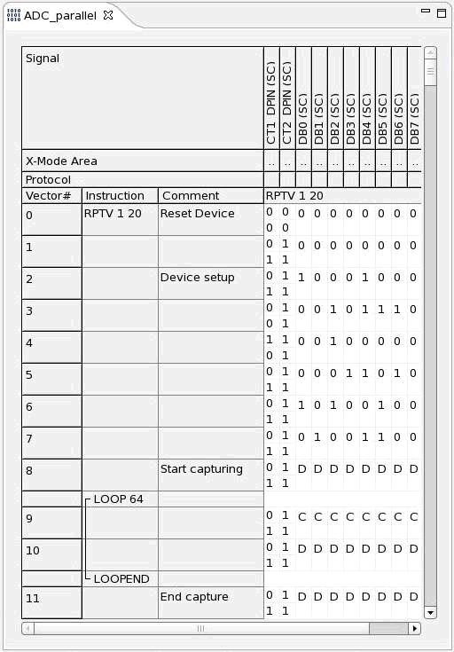

For Selective Capturing
- Create a designated 'capture' device cycle and a designated 'do not capture' device cycle in the vectors to determine at which vector data is to be captured and at which vector not. How to set up these device cycles is described in Setting up the Timing
- Patterns that contain digital capture actions ('capture' and 'do not capture') must be associated with test methods, which do not execute functional tests. That means the test methods must not contain the APIs EXECUTE_TEST, START_TEST or the firmware command FTST? - (Functional TeST). The API DIGITAL_CAPTURE_TESTor the firmware command DGCT? - (DiGital Capture Test) must be used in test methods associated with digital capture patterns.
- Selective capturing can be run on a single pin with serial output data, where sequences
(frames) of data must be captured, and other data between frames must be skipped.
But also parallel selective capturing on n capture pins is possible. As the data captured in parallel at these n pins normally form one n-bit sample, 'capture' and 'do not capture' should be performed synchronously for all pins.
The figure below shows an example of a pattern for selective capturing at the output of an ADC (pins DB0 to DB7).

In the pattern shown above, parallel selective capture is applied to the pins DB0 to DB7.
On the vectors 0 to 7, the pins are in input mode to set up the device. From vector 8 on, pins are in output mode. The vectors 8, 10, and 11 are not captured (D = Do not capture) , vector 9 is captured (C).
Note Selective capture and DC measurements: When using selective capture and
DC measurements (or any other sequencer instruction that generates break vectors such as (BRKV,
CTIM, CLEV, Matchloop, etc.) in a pattern, you have to observe certain preconditions with respect
to the capture block sizes. In principle, the blocks where data is captured must always be a
multiple of 8 cycles, otherwise unwanted samples will be recorded when entering the break cycle
generating part of the pattern. This restriction does not apply to the Pin Scale 5000 card. Hence, the data captured by the PS5000 may not be the same as the data
captured by the PS1600, if this condition is not followed.